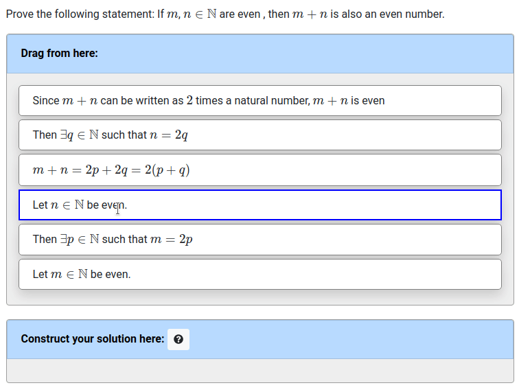

Let students construct a proof by dragging and dropping, rather than starting from scratch.

Many students struggle to complete a mathametical proof, even when they have the required content knowledge. Proof Blocks scaffolds students by presenting them with a set of lines which they must assemble into the correct order. Problems are autograded based on the dependency graph of the proof, allowing students to recieve instant feedback on their proof. Proof Blocks is not meant to replace writing proofs, but can be a step along the way as students work toward mathematical maturity.
Try out Proof Blocks on PrairieLearn
(requires login with Google or Microsoft)